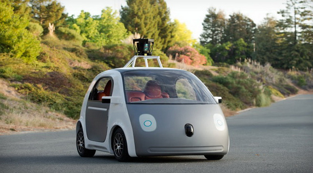
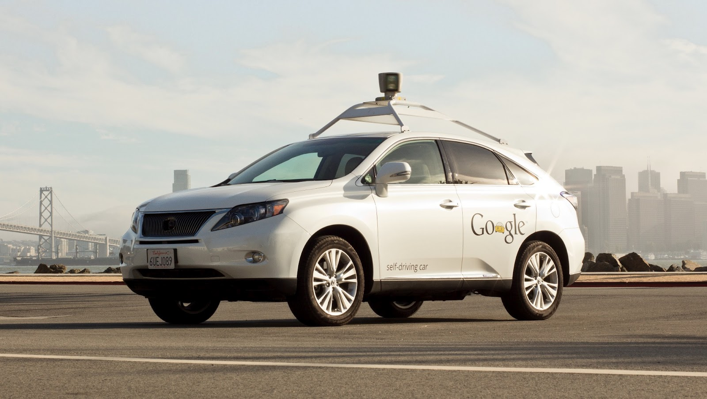
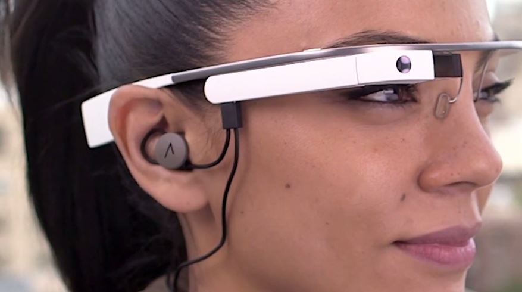
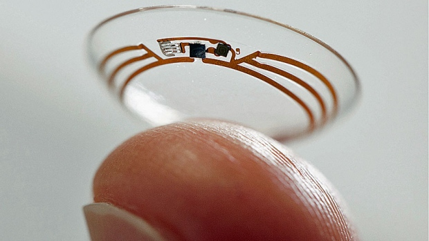
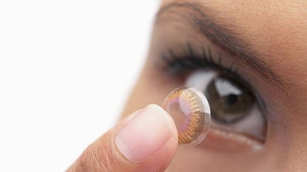
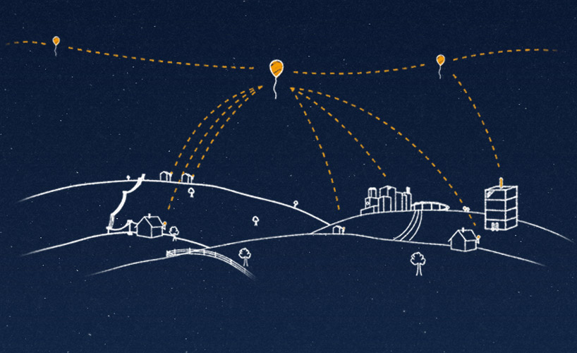
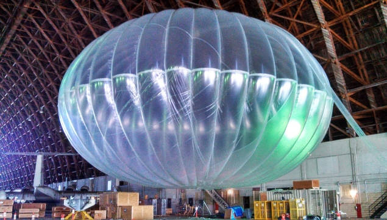
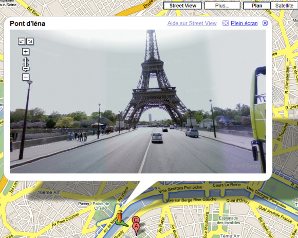
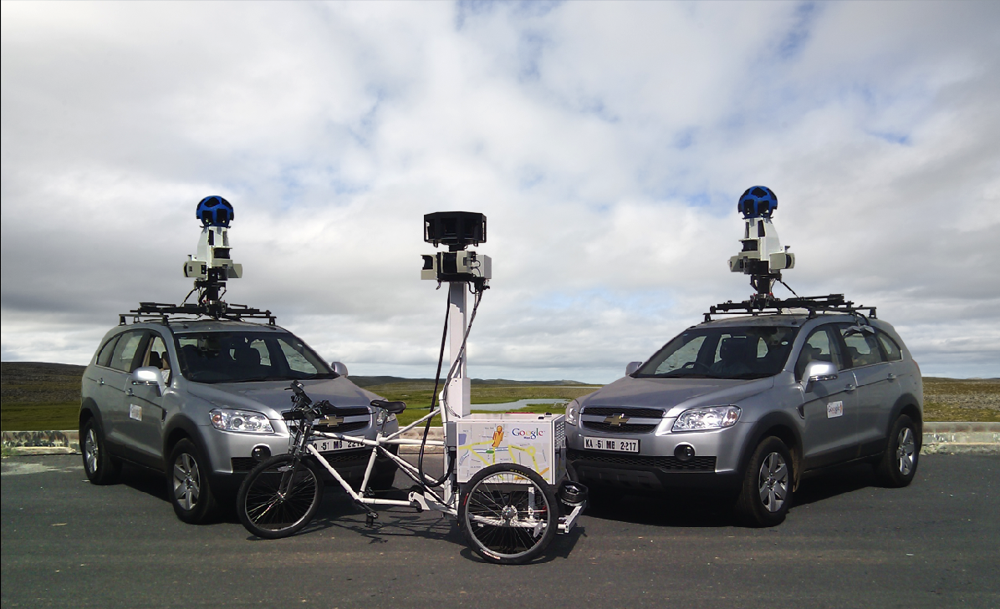

Google's Driverless Car
The google self driving cars, one of the products of google x among others such as electric cars and others. The software powering these is called google chauffeur. A number of cars have adopted this among which Toyota Prius, Audi TT, and Lexus RX450h are few. The range finder mounted on the top of the vehicle is a Velodyne 64-beam laser. This laser allows the vehicle to generate a detailed 3D map of its environment. The car then takes these generated maps and combines them with high-resolution maps of the world, producing different types of data models that allow it to drive itself. The car hasn't been as reliable when it comes to road accidents though, being involved in 14 minor traffic accidents on public roads as of July 2015, but Google maintains in all cases that the vehicle was not at fault as they were either being manually driven or the driver of another vehicle was at fault.
The Google Glass

Well this piece is quite a model to watch out for. The Google Glass displays information in a smartphone-like hands-free format. With an optical head-mounted display we can communicate with the Internet via natural language voice commands or by a touchpad provided at the side. The touchpad allows users to control the device by swiping through a timeline-like interface displayed on the screen. Sliding backward shows current events, such as weather, and sliding forward shows past events, such as phone calls, photos, circle updates, etc. Add to it, the Google Glass also has the ability to take photos and record 720p HD video.
The Google Contact Lens
Google's approach to this product is really commendable. The Google contact lens has a wireless chip and can also measure blood sugar levels. A tiny pinhole in the lens allows for tear fluid to seep into the sensor to measure blood sugar levels. The electronics lie outside both the pupil and the iris so there is no damage to the eye. There is a wireless antenna inside of the contact which acts as a controller to communicate information to the wireless device. The best thing about it is that it's even thinner than a human's hair and is responsible for gathering, reading and analyzing data. There have been propositions of adding a small LED light that will warn the wearer by lighting up when the glucose levels have crossed above or below a certain level, but limitations such as the toxic metal arsenic present in the LED's have barred such an addition to the Google lens.
Project Loon
Project loon is Google's way of solving the problem of providing Internet in far off rural places. It is a high altitude balloon network operating in the stratosphere, at altitudes between 18km and 25km. This particular layer is advantageous because of its relatively low wind speeds and minimal turbulence, according to Google. Google also claims that it can control the latitudinal and longitudinal position of the high-altitude balloons by adjusting only the balloon's altitude. By adjusting the volume and density of the gas in the balloon, the balloon's variable buoyancy system is able to control the balloon's altitude. The technology designed in the project could allow countries to avoid using expensive fiber cable that would have to be installed underground to allow users to connect to the Internet. Google feels this will greatly increase Internet usage in developing countries in regions such as Africa and Southeast Asia that can't afford to lay underground fiber cable.
Google Street View
Google Street View is a technology featured in Google Maps and Google Earth that provides panoramic views from positions along many streets in the world. It was launched in 2007 in several cities in the United States, and has since expanded to include cities and rural areas worldwide. Streets with Street View imagery available are shown as blue lines on Google Maps. Google Street View displays panoramas of stitched images. Most photography is done by car, but some is done by trekker, tricycle, walking, boat, snowmobile, camel, and underwater apparatus.
